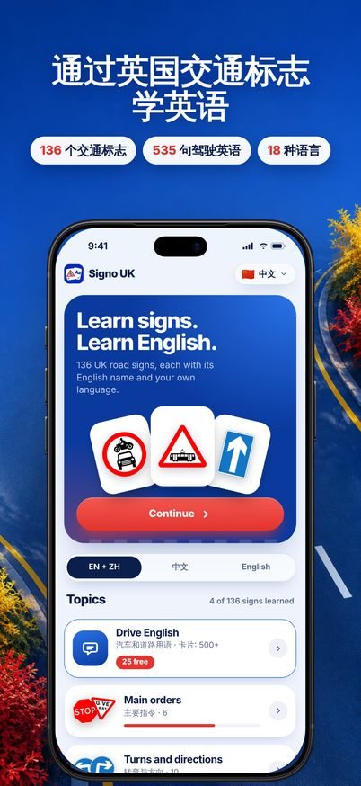
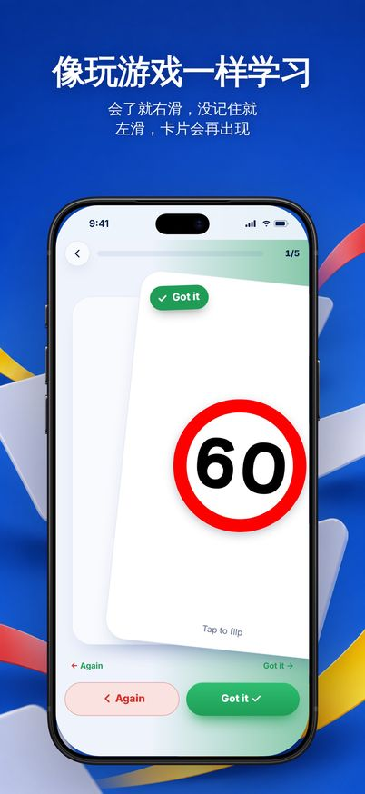
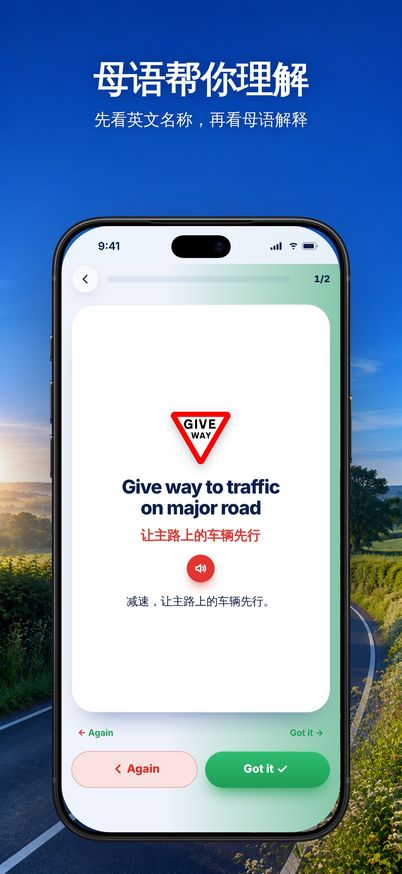
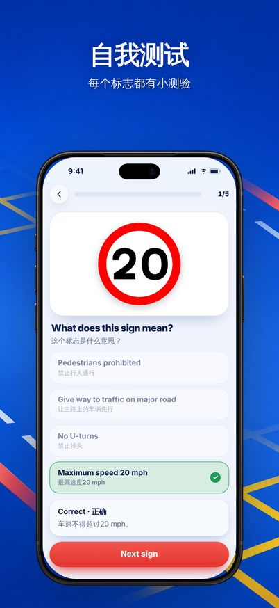
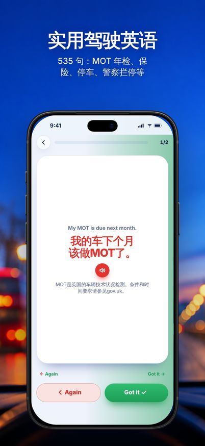
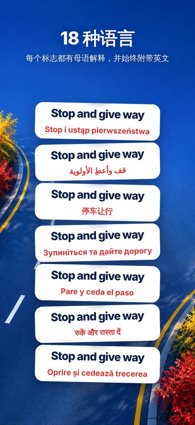
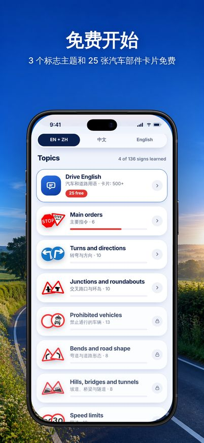
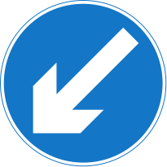
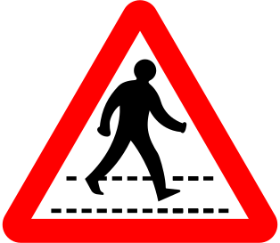
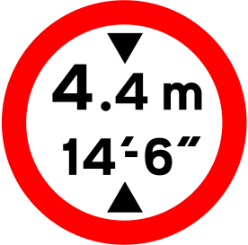

英国交通标志，中文详解
每个标志的含义和它的英文名称。Signo 是一款 iPhone 应用：136 个标志和 535 条在英国开车用的英语短语，配有中文讲解。
在 App Store 下载免费内容：3 个标志主题和 25 个汽车部件单词。Signo Pro 解锁全部内容。


像玩游戏一样学
认识这个标志就向右滑，不认识就向左滑，它会再出现。用英式发音听每个英文名称，然后做个小测验。







常见标志及其含义
点按标志查看讲解。
- 停车让行Stop and give way
 让主路上的车辆先行Give way to traffic on major road
让主路上的车辆先行Give way to traffic on major road 禁止车辆驶入No entry for vehicular traffic
禁止车辆驶入No entry for vehicular traffic 适用全国限速规定National speed limit applies
适用全国限速规定National speed limit applies- 最高速度30 mphMaximum speed 30 mph
 最高速度20 mphMaximum speed 20 mph
最高速度20 mphMaximum speed 20 mph 最高速度40 mphMaximum speed 40 mph
最高速度40 mphMaximum speed 40 mph 最高速度50 mphMaximum speed 50 mph
最高速度50 mphMaximum speed 50 mph 最高速度60 mphMaximum speed 60 mph
最高速度60 mphMaximum speed 60 mph 进入20 mph限速区Entry to 20 mph zone
进入20 mph限速区Entry to 20 mph zone 禁止超车No overtaking
禁止超车No overtaking 禁止右转No right turn
禁止右转No right turn 禁止左转No left turn
禁止左转No left turn 禁止掉头No U-turns
禁止掉头No U-turns
靠左通行Keep left 小型环岛Mini-roundabout
小型环岛Mini-roundabout- 前方环岛Roundabout ahead
 禁止所有车辆通行All vehicles prohibited
禁止所有车辆通行All vehicles prohibited 禁止机动车通行No motor vehicles
禁止机动车通行No motor vehicles 主车行道禁止停车No stopping on main carriageway
主车行道禁止停车No stopping on main carriageway 仅供公共汽车、自行车和出租车使用的道路Route for use by buses, pedal cycles and taxis only
仅供公共汽车、自行车和出租车使用的道路Route for use by buses, pedal cycles and taxis only 受控停车区入口Entrance to controlled parking zone
受控停车区入口Entrance to controlled parking zone 仅限许可证持有者Permit holders only
仅限许可证持有者Permit holders only 仅限残障停车证持有者Disabled badge holders only
仅限残障停车证持有者Disabled badge holders only 停车处Parking place
停车处Parking place 测速摄像头Speed cameras
测速摄像头Speed cameras 停车——警察Stop - Police
停车——警察Stop - Police 高速公路法规开始适用处Point at which motorway regulations start to apply
高速公路法规开始适用处Point at which motorway regulations start to apply 前方交通信号灯Traffic signals ahead
前方交通信号灯Traffic signals ahead
斑马线人行横道Zebra crossing 前方有往返学校或游乐场的儿童Children going to or from school or playground ahead
前方有往返学校或游乐场的儿童Children going to or from school or playground ahead 道路施工Road works
道路施工Road works 路滑Slippery road
路滑Slippery road 前方有设门或栏杆的铁路平交道口Level crossing with gate or barrier ahead
前方有设门或栏杆的铁路平交道口Level crossing with gate or barrier ahead 前方有无门无栏杆的铁路平交道口Railway level crossing without gate or barrier ahead
前方有无门无栏杆的铁路平交道口Railway level crossing without gate or barrier ahead 让对向车辆优先通行Give priority to vehicles from opposite direction
让对向车辆优先通行Give priority to vehicles from opposite direction 本向车辆比对向车辆优先通行Traffic has priority over oncoming vehicles
本向车辆比对向车辆优先通行Traffic has priority over oncoming vehicles
禁止超过标示高度的车辆通行No vehicles over height shown 前方丁字路口T-junction ahead
前方丁字路口T-junction ahead 前方十字路口Crossroads ahead
前方十字路口Crossroads ahead 单车道道路Single track road
单车道道路Single track road 会车处Passing place
会车处Passing place
汽车部件的英文说法
来自免费 Drive English 章节的 25 个单词。点按单词即可收听。